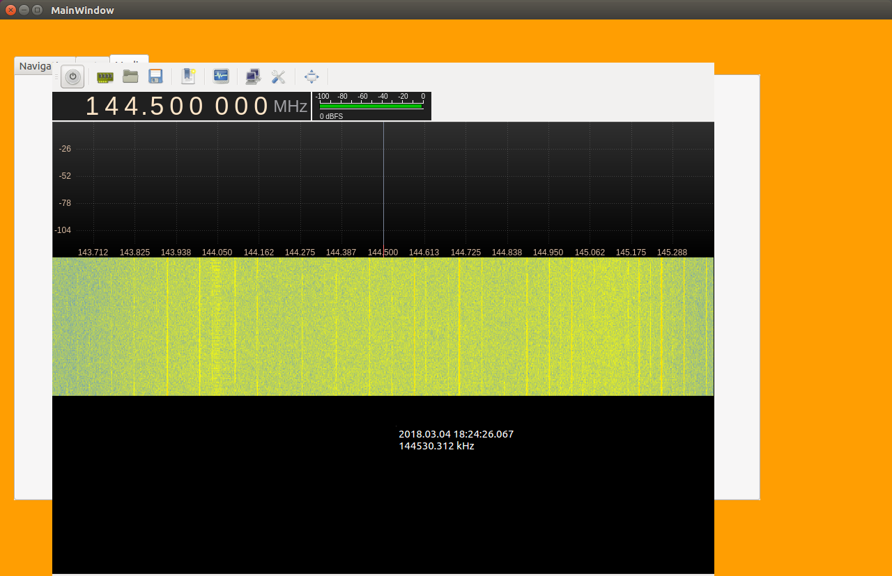

FM Radio
The FM antenna we used was the USB dongle FM Receiver found here: https://www.adafruit.com/product/1497?gclid=CjwKCAiAz-7UBRBAEiwAVrz-9V_HFI4jymkhA5_7Y6Rbb0naXSOS8hFiLUn-GCera0PbPrCVG8QG1RoCg5QQAvD_BwE. In order to operate on using this antenna, certain drivers needed to be installed. The instructions at http://osmocom.org/projects/sdr/wiki/rtl-sdr#Using-the-datawere followed to make sure that the Axolotl was capable of communicating with the antenna.
Then the software gqrx was installed for interfacing with the radio:
note the following instructions here might be necessary to install gqrx properly: http://gqrx.dk/download/install-ubuntu
sudo apt-get install gqrx